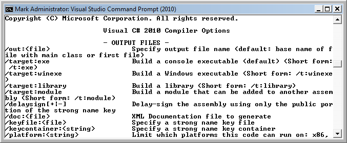
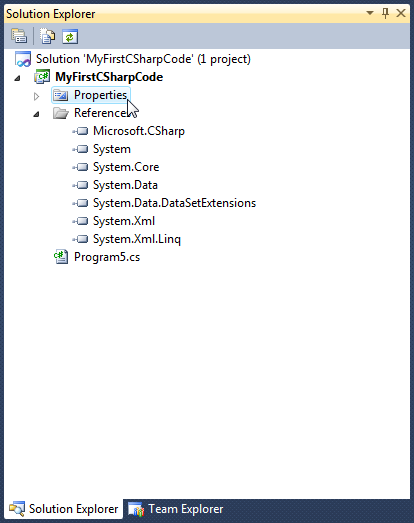
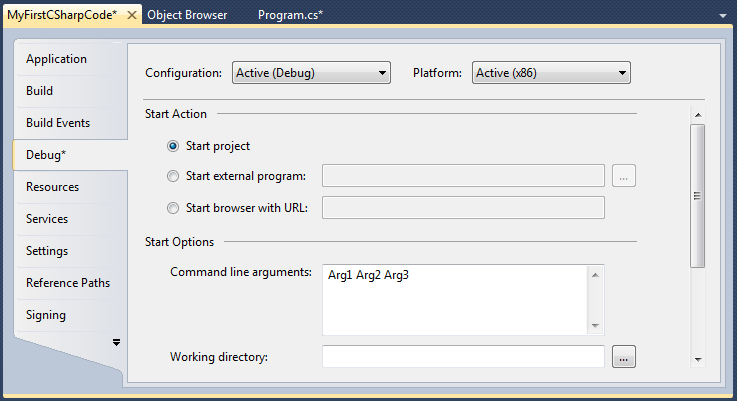

.NET Framework 4.0 Introduction 2017
C# is a multi-paradigm programming language encompassing imperative, declarative, functional, generic, object-oriented, and component-oriented programming disciplines.
It was developed by Microsoft within the .NET initiative and later approved as a standard by Ecma (ECMA-334) and ISO (ISO/IEC 23270). C# is one of the programming languages designed for the Common Language Infrastructure (CLI).
C# is intended to be a simple, modern, general-purpose, object-oriented programming language. Its development team is led by Anders Hejlsberg. The most recent version is C# 4.0, which was released on April 12, 2010.
C# 4.0 is the latest version, which was released in April 11, 2010. Microsoft has released the 4.0 runtime and development environment Visual Studio 2010. The major focus of C# 4.0 is interoperability with partially or fully dynamically typed languages and frameworks, such as the Dynamic Language Runtime and COM.
Here are the new features:
- Dynamic member lookup
A new pseudo-type dynamic is introduced into the C# type system. It is treated as System.Object, but in addition, any member access (method call, field, property, or indexer access, or a delegate invocation) or application of an operator on a value of such type is permitted without any type checking, and its resolution is postponed until run-time. This is known as Duck typing. - Covariant and contravariant generic type parameters
Generic interfaces and delegates can have their type parameters marked as covariant or contravariant, using keywords out and in, respectively. These declarations are then respected for type conversions, both implicit and explicit, and both compile-time and run-time. - Optional ref Keyword when using COM
The ref keyword for callers of methods is now optional when calling into methods supplied by COM interfaces. - Optional parameters and named arguments
C# 4.0 introduces optional parameters with default values as seen in Visual Basic and C++. - Indexed properties
Indexed properties (and default properties) of COM objects are now recognized, but C# objects still do not support them.
You can invoke the C# compiler by typing the name of its executable file, csc.exe on the command line. If you use the Visual Studio Command Prompt (available as a shortcut on the start menu under Visual Studio Tools), all the necessary environment variables are set for you. Otherwise, you must adjust your path in order to enable csc.exe to be invoked from any subdirectory on your computer. If you do not use the Visual Studio Command Prompt, you must run vsvars32.bat under C:\Program Files (x86)\Microsoft Visual Studio 10.0\Common7\Tools to set the appropriate environment variables to support command line builds.
Let's start with Visual Studio 2010:
Start -> Programs -> Visual Studio 2010 -> Visual Studio Tools.
Then, type in
csc -?
We get:
If we want to make it work on other command prompt, we should set the new path. For my system the paths are:
C:\Windows\Microsoft.NET\Framework64\v4.0.30319 C:\Program Files (x86)\Microsoft SDKs\Windows\v7.0A\Bin C:\Program Files (x86)\Microsoft Visual Studio 10.0\SDK\v3.5\Bin
Once you have updated your Path variable, close all dialog boxes and any currently opened Console windows to commit the settings. You should now be able to execute csc.exe and other .NET tools from any Command prompt. To test, enter the following commands:
csc -? ildasm -?
We can check it's working if we see the same output as the one running from the Visual Studio Prompt.
TABLE
| Option | Description |
|---|---|
| /out | This option is used to specify the name of the assembly to be created. By default, the assembly name is the same as the name of the initial input *.cs file. |
| /target:exe | This option is used to specify the name of the assembly to be created. By default, the assembly name is the same as the name of the initial input *.cs file. |
| /target:library | This option builds a single-file *.dll assembly |
| /target:module | This option builds a module. Modules are elements of multifile assemblies. |
| /target:winexe | Although we are free to build graphical user interface-based applications using the target:exe. Modules are elements of multifile assemblies. |
- Compiles File.cs producing File.exe
csc /target:exe File.cs
- Compiles File.cs using abbreviation producing File.exe
csc /t:exe File.cs
- Compiles File.cs producing File.exe because /t:exe is the default output.
csc File.cs
- Compiles File.cs producing File.dll
csc /target:library File.cs
- Compiles File.cs and creates MyCSharp.exe:
csc /out:MyCSharp.exe File.cs
- Compiles all the C# files in the current directory, with optimizations on and defines the DEBUG symbol. The output is File2.exe
csc /define:DEBUG /optimize /out:File2.exe *.cs
- Compiles all the C# files in the current directory producing a debug version of File2.dll. No logo and no warnings are displayed
csc /target:library /out:File2.dll /warn:0 /nologo /debug *.cs
- Compiles all the C# files in the current directory to Something.useful (a DLL):
csc /target:library /out:Something.useful *.cs
There are no object (.obj) files created as a result of invoking the C# compiler; output files are created directly. As a result of this, the C# compiler does Not need a linker
Here is our first C# code:
// Program.cs
using System;
using System.Collections.Generic;
using System.Linq;
using System.Text;
namespace MyFirstCSharpCode
{
class Program
{
static void Main(string[] args)
{
}
}
}
A C# program consists of one or more type declarations. C# requires that all program be contained within a type (class, interface, structure, enumeration, delegate etc.) definition. In other words, all data members and methods must be contained within a type definition. In the above example, only the class type is declared.
The code is created as a new Console Application project named MyFirstCSharpCode.
The program uses two namespaces. It creates a new namespace called MyFirstCSharpCode, and uses a predefined namespace called System.
The method Main() is a member of class MyFirstCSharpCode and it's a special function used by the compiler as the starting point of the program. By default, Visual Studio names the class defining Main(). Here, it's the Program. So, the file name is Program.cs. However, we are free to change this if we so choose.
The class that defines the Main() method is termed the application object (which can be useful when performing unit tests), we must inform the compiler which Main() method should be used as the entry point via the /main option of the command-line compiler.
Note that the signature of Main() is adorned with the static keyword. Static members are scoped to the class level rather than the object level and can thus be invoked without the need to first create a new class instance.
In addition to the static keyword, this Main() method has a single parameter, which is an array of strings:
string[] args
To compile the program, we can use Visual Studio or the command-line compiler. To use the command-line compiler, use the following command:
csc Program.cs
In this command, csc is the name of the command-line compiler and Program.cs is the name of the source file.
Let's make the code more interesting:
// Program2.cs
using System;
using System.Collections.Generic;
using System.Linq;
using System.Text;
namespace MyFirstCSharpCode
{
class Program2
{
static void Main(string[] args)
{
Console.WriteLine("My first C# code");
Console.WriteLine("Hello World");
Console.WriteLine();
Console.ReadLine();
}
}
}
In the new code, we make use of the Console class, which is defined within the System namespace. Among its set of members is the static WriteLine() which pumps a text string and carriage return to the standard output. We also make a call to Console.ReadLine() to ensure the command prompt launched by the Visual Studio 2010 IDE remains visible during a debugging session until we press the Enter key.
Note that we have several methods for our Main():
-
static int Main(string[] args)
-
static void Main()
-
static int Main()
The ability to return an int from Main() keeps C# consistent with other C-based languages. By convention, returning the value 0 indicates the program has terminated successfully, while another value such as -1 represents an error condition.
On the Windows OS, an application's return value is stored within a system environment variable named %ERRORLEVEL%. If we were to create an application that programmatically launches another executable, we can obtain the value of %ERRORLEVEL% using the static System.Diagnostics.Process.ExitCode property.
Given that an application's return value is passed to the system at the time the application terminates, it is obviously not possible for an application to obtain and display its final error code while running. However, to illustrate how to view this error level upon program termination, begin by updating the Main() method:
// Program3.cs
using System;
using System.Collections.Generic;
using System.Linq;
using System.Text;
namespace MyFirstCSharpCode
{
class Program3
{
static int Main(string[] args)
{
Console.WriteLine("My first C# code");
Console.WriteLine("Hello World!");
Console.WriteLine();
Console.ReadLine();
return -1;
}
}
}
Let's capture Main()'s return value with the help of a batch file. Using the Windows Explorer, put MyFirstCSharpCode.bat into C:\Documents\Visual Studio 2010\Projects\MyFirstCSharpCode folder. The file looks like this:
@echo off rem A batch file for MyFirstCSharpCode.exe rem which captures the app's return value. MyFirstCSharpCode @if "%ERROELEVEL%" == "0" goto success :fail echo This application has failed! echo return value = %ERRORLEVEL% goto end :success echo This application has succeeded! echo return value = %ERRORLEVEL% goto end :end echo Done.
Let's open a command prompt and navigate to the folder containing our executable and the new batch file. Execute the batch file by typing in the name MyFirstCSharpCode.bat and pressing the Enter key. We'll get:
My first C# code Hello World! Testing Error This application has failed! return value = -1 Done..
However, a vast majority of our C# application will use void as the return value from Main(), which implicitly returns the error code of zero. We may not the batch file at all.
Let's look at the incoming array of string data. Now we want to update our application to process any possible command-line parameters using a C# for loop.
// Program4.cs
using System;
using System.Collections.Generic;
using System.Linq;
using System.Text;
namespace MyFirstCSharpCode
{
class Program4
{
static int Main(string[] args)
{
Console.WriteLine("My first C# code");
Console.WriteLine("Hello World!");
Console.WriteLine();
for(int i = 0; i < args.Length; i++)
Console.WriteLine("Arg: {0}", args[i]);
Console.ReadLine();
return -1;
}
}
}
Here, we are checking to see whether the array of strings contains the number of items using the Length property of System.Array.
C:\>cd CSharp C:\CSharp>csc Program4.cs Microsoft (R) Visual C# 2010 Compiler version 4.0.30319.1 Copyright (C) Microsoft Corporation. All rights reserved. C:\CSharp>Program4 argA argB argC My first C# code Hello World! Arg: argA Arg: argB Arg: argC C:\CSharp>
As we loop over each item in the array, its value is printed to the console window.
We can use an alternative to the standard for loop. We may iterate over an incoming string array using the C# foreach keyword:
foreach(string a in args)
Console.WriteLine("Arg: {0}", a);
We are also able to access command-line argument using the static GetCommandLineArgs() method of the System.Environment type. The return value of this method is an array of strings. The first index identifies the name of the application itself, while the remaining elements in the array contain the individual command-line arguments.
// Program5.cs
using System;
using System.Collections.Generic;
using System.Linq;
using System.Text;
namespace MyFirstCSharpCode
{
class Program5
{
static int Main(string[] args)
{
Console.WriteLine("My first C# code");
Console.WriteLine("Hello World!");
Console.WriteLine();
string[] arguments = Environment.GetCommandLineArgs();
foreach(string arg in arguments)
Console.WriteLine("Arg: {0}", arg);
Console.ReadLine();
return -1;
}
}
}
Output is
C:\CSharp>csc Program5.cs Microsoft (R) Visual C# 2010 Compiler version 4.0.30319.1 Copyright (C) Microsoft Corporation. All rights reserved. C:\CSharp>Program5 argA argB argC My first C# code Hello World! Arg: Program5 Arg: argA Arg: argB Arg: argC C:\CSharp>
While in the real world, the user supplies the command-line arguments, we may want to specify command-line argument during the development cycle.
To specify the arguments with Visual Studio 2010, double-click the Properties icon from Solution Explorer.

Then, select the Debug tab on the left side. After that we can specify values using the Command line arguments text box.
Ph.D. / Golden Gate Ave, San Francisco / Seoul National Univ / Carnegie Mellon / UC Berkeley / DevOps / Deep Learning / Visualization